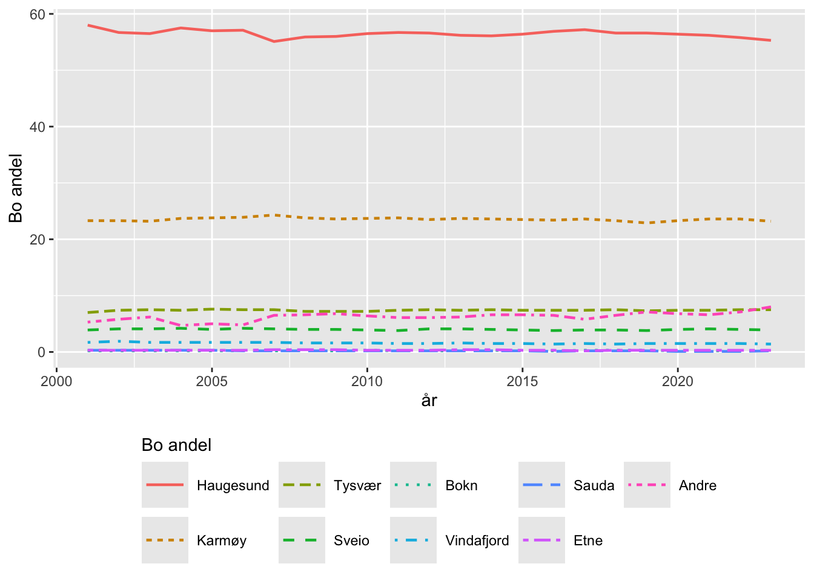
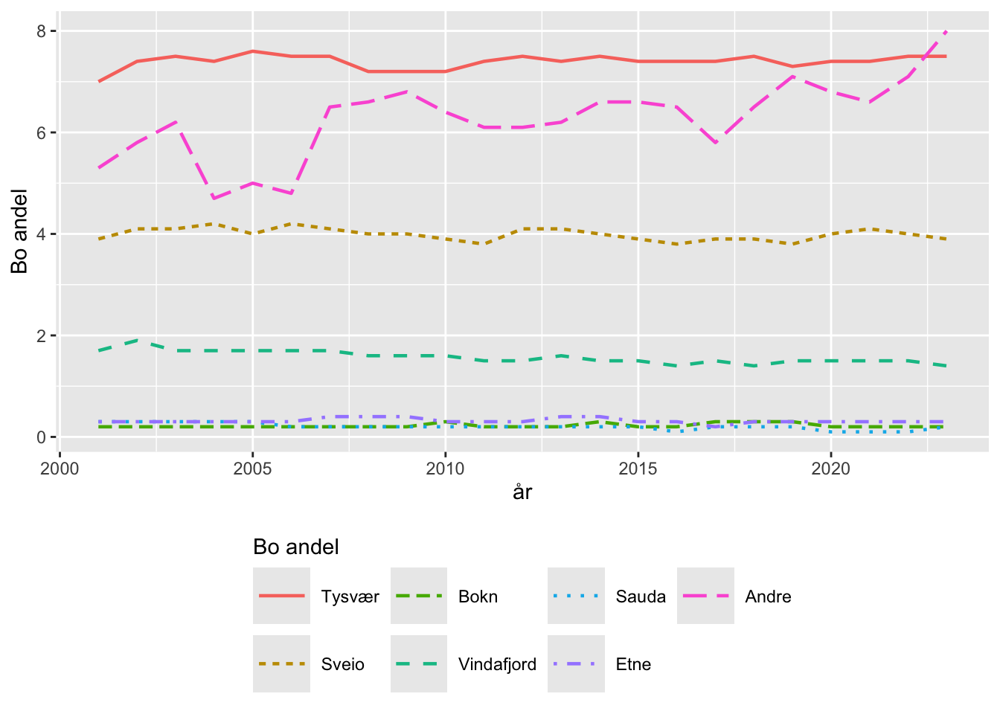

library(tidyverse)
library(tidyselect)
library(lubridate)
library(PxWebApiData)
library(flextable)Assingment 3; Pendling
Pakker jeg brukte i min løsning.
Innledning
I denne oppgaven skal vi studere pendle-mønster for en norsk region. Vi vil studere et utvalg kommuner som kan sies å utgjøre det som gjerne kalles Haugalandet i perioden 2000 t.o.m. 2022. Dataene vil vi hente fra SSB sin statistikktabell 03321, «Sysselsatte (15-74 år), etter arbeidssteds- og bostedskommune. Pendlingsstrømmer. 4. kvartal (K) 2000 - 2022». Vi skal benytte dataene til å generere grafikk som viser utviklingen i jobbpendling over tid for de ulike kommunene. Grafikken vil vi generere vha geom_line() fra ggplot2 pakken (del av tidyverse). For geom_line() trenger vi dataene i såkalt «long-format». Dette bør vi ta hensyn til alt fra starten av i vår behandling av pendle-dataene.
Vi vil beregne andelen som bor i de ulike kommunene for dem som jobber i en gitt kommune og også andelen som jobber i de ulike kommunene for dem som bor i en gitt kommune. Disse andelene er ikke like.
I tillegg skal vi generere såkalte pendle-matriser («origin-destination-matrix»). I en pendle-matrise vil hver rekke angi hvor de som bor i en kommune arbeider. Tilsvarende angir en kolonne hvor de som jobber i en kommune bor.
På Haugalandet har det også vært kommunesammenslåinger som har gitt oss Vidafjord fra 2006. Kommunene Sveio og Etne har også skiftet fra gamle Hordaland til nye Vestland fylke. Vi vil generere konsistente pendle-data for perioden 2000 t.o.m. 2022 som korresponderer med denne nye kommunestrukturen.
Dataene fra SSB vil vi hente direkte inn i R via pakken PxWebApiData, som gir oss tilgang til SSB via en api.
Vi vil hente data fra tabell 03321 og må selv ta oss av aggregeringen av data. Vi har også pendling fra kommuner utenfor regionen til Haugalandet og fra Haugalandet til kommuner utenfor regionen. Disse kommunene vil vi samle i kategorien “Andre”.
Kommuner på Haugalandet 2022
Vi definerer Haugalandet som følgende kommuner: Haugesund, Karmøy, Tysvær, Sveio, Bokn, Vindafjord, Sauda og Etne. I tillegg vil vi ha samlekategorien Andre. Vi tar med både de «gamle» og «nye» kommunene når vi henter rådata. Disse kommunene vil bare inneholde data for de årene de har eksistert. Unntaket er Ølen (2002-2005) som synes å også innholde data fra perioden før 2002 da Ølen (knr 1214) var del av Hordaland fylke. Ølen (knr 1214) eksisterer derfor ikke i kommunelisten. For å få en sammenhengende tidsserie må vi slå sammen «gamle» og «nye» kommuner. F.eks vil vi ha at 4612 Sveio = 4612 Sveio + 1211 Sveio (-2019). Vi vil få til denne aggregeringen ved å benytte fct_collapse() funksjonen.
Kommunene vi trenger data for er: Haugesund, Sauda, Bokn, Tysvær, Karmøy, Vindafjord (1965-2005), Ølen (2002-2005), Vindafjord, Etne, Sveio, Sveio (-2019), Etne (-2019).
De korresponderende kommune-numrene er:
1106, 1135, 1145, 1149, 1154, 1159, 1160, 4611, 4612, 1211, 1216Samlet i en tibble (hland) blir det slik:
knr | kNavn |
|---|---|
1106 | Haugesund |
1135 | Sauda |
1145 | Bokn |
1146 | Tysvær |
1149 | Karmøy |
1154 | Vindafjord (1965-2005) |
1159 | Ølen (2002-2005) |
1160 | Vindafjord |
4611 | Etne |
4612 | Sveio |
1211 | Sveio (-2019) |
1216 | Etne (-2019) |
Legg kommunenummerene fra Tabell 1 inn i en vektor knr som character.
Hente data fra SSB
Vi kunne trengt hele datasettet, dvs. for alle arbeidssted-kommuner, akom, og alle bosteds-kommuner,bkom, men det vil ikke SSB gi oss fra tabell 03321. Vi henter derfor ut data for alle arb_kom (arbeidssted-kommuner) for dem som bor i en av kommunene på Haugalandet i et datasett, og et annet datasett der vi henter ut bo_kom (bostedkommune) for dem som arbeider i en kommune på Haugalandet. Vi vil da mangle informasjon om hvor mange som både bor og arbeider utenfor Haugalandet. Dette er imidlertid av mindre interesse i den sammenhengen vi ser på her.
Kall datasettet med antall arbeidstakere som arbeider på Haugalandet for pend_00_22_ssb_arbHland, og datasettet med arbeidstakere som bor på Haugalandet for pend_00_22_ssb_boHland.
Se denne sliden (parameteren Region) for tips om hvordan man velger alle kommuner, men vi skal ha alle så dropp 11. Se videre denne sliden for hvordan man kan finne hvilke data statistikktabell 03321 kan tilby (sliden er for tabell 10540).
OBS! merk skrivemåten Bokommuen. Merk også at tid må angis som character vektor, dvs. as.character(2000:2022).
Hent arbeidstakere som bor på Haugalandet, jobber i kommuner over hele landet for perioden 2000-2022. Benytt funksjonen PxWebApiData::ApiData12() med argumentene:
urlToData: nummer på tabellen som characters,
ArbstedKomm: alle kommuner i landet (Hint!)
Bokommuen: character vektor med kommune-numrene (knr) til kommunene på Haugalandet.NB! Merk skrivemåten.
Tid: character vektor med årene 2000 til 2022
Gi rådataene om bosted navnet pend_00_22_ssb_boHland.
Når en er sikker på at en har fått dataene en ønsker fra SSB kan det være lurt å sette #| cache: true i chunk-en. Da blir dataene tatt vare på og en slipper å hente nye data hver gang en kjører koden i dokumentet.
Finn på tilsvarende vis antall arbeidstakere som jobber på Haugalandet med bosteds-kommune fordelt over hele landet. Kall dette objektet for pend_00_22_ssb_arbHland. Benytt igjen ApiData12().
Vi lager vår egen reduserte versjon av pend_00_22_ssb_arbHland og pend_00_22_ssb_boHland og kaller disse hhv. pend_00_22_arbHland og pend_00_22_boHland. Variablene vi trenger er
arbeidsstedskommune: som vi gir navnet arb_kombostedskommune: som vi gir navnet bo_komår: som vi gir navnet aarvalue: som vi gir navnetpendlere
Vi bryr oss altså ikke om kommunenummer i det videre arbeidet og jobber bare med kommunenavn som kategorivariabler.
Da skal vi ha noe som ser slik ut:
print(pend_00_22_boHland, n = 5)# A tibble: 203,688 × 4
aar bo_kom arb_kom pendlere
<chr> <chr> <chr> <int>
1 2000 Haugesund Halden (2020-2023) 0
2 2001 Haugesund Halden (2020-2023) 0
3 2002 Haugesund Halden (2020-2023) 0
4 2003 Haugesund Halden (2020-2023) 0
5 2004 Haugesund Halden (2020-2023) 0
# ℹ 203,683 more rowsGjør tilsvarende for pend_00_22_ssb_arbHland og plasser resultatet i pend_00_22_arbHland.
Da skal vi ende opp med noe som ser slik ut:
print(pend_00_22_arbHland, n = 5)# A tibble: 203,688 × 4
aar arb_kom bo_kom pendlere
<chr> <chr> <chr> <int>
1 2000 Haugesund Halden (2020-2023) 0
2 2001 Haugesund Halden (2020-2023) 0
3 2002 Haugesund Halden (2020-2023) 0
4 2003 Haugesund Halden (2020-2023) 0
5 2004 Haugesund Halden (2020-2023) 0
# ℹ 203,683 more rowsVi må så konvertere arb_kom og bo_kom til kategorivariabler vha. fct() funksjonen. Hver av disse variablene skal så kollapses til kategoriene Haugesund, Sauda, Bokn, Tysvær, Karmøy, Vindafjord og Ølen. Vi gjør dette ved å bruke fct_collapse() funksjonen. Vi må også sørge for at hhv. Ølen og Vindafjord blir slått sammen til en kategori fra sine «gamle» versjoner. Vi samler kommunene utenfor Haugalandet i kategorien «Andre» vha. argumentet other_level = "Andre". Overskriv arb_kom og bo_kom med sine kollapsede versjoner.
Dette vil gi oss noe som ser slik ut:
dim(pend_00_22_arbHland)[1] 203688 4# A tibble: 5 × 4
aar arb_kom bo_kom pendlere
<chr> <fct> <fct> <int>
1 2000 Haugesund Haugesund 10157
2 2000 Haugesund Sauda 60
3 2000 Haugesund Bokn 34
4 2000 Haugesund Tysvær 1234
5 2000 Haugesund Karmøy 4081Vi gjør så tilsvarende for pend_00_22_boHland og bruker de samme variabelnavnene.
Dette vil gi oss noe som ser slik ut:
dim(pend_00_22_boHland)[1] 203688 4# A tibble: 5 × 4
aar bo_kom arb_kom pendlere
<chr> <fct> <fct> <int>
1 2000 Haugesund Haugesund 10157
2 2000 Haugesund Sauda 5
3 2000 Haugesund Bokn 15
4 2000 Haugesund Tysvær 593
5 2000 Haugesund Karmøy 1664Vi grupperer så mht. år, bo-kommune og arbeidssted, før vi benytter summarise() og finner totalt antall pendlere i disse gruppene. Vi trenger ikke gruppestrukturen så det kan være hensiktsmessig å fjerne den med .groups = "drop" som argument i summarise() funksjonen. Vi overskriver pend_00_22_arbHland med denne nye aggregerte versjonen, men det kan være lurt å først skrive til en temporær variabel til vi er sikre på at vi har gjort ting riktig.
# eval: false
pend_00_22_arbHland <- pend_00_22_arbHland |>
group_by(aar, bo_kom, arb_kom) |>
summarise(pendlere = sum(pendlere), .groups = "drop")Har vi gjort ting riktig skal vi ha:
dim(pend_00_22_arbHland)[1] 1656 4pend_00_22_arbHland |>
head(n = 5)# A tibble: 5 × 4
aar bo_kom arb_kom pendlere
<chr> <fct> <fct> <int>
1 2000 Haugesund Haugesund 10157
2 2000 Haugesund Sauda 5
3 2000 Haugesund Bokn 15
4 2000 Haugesund Tysvær 593
5 2000 Haugesund Karmøy 1664Gjør tilsvarende for pend_00_22_boHland.
# eval: false
pend_00_22_boHland <- pend_00_22_boHland |>
group_by(aar, arb_kom, bo_kom) |>
summarise(pendlere = sum(pendlere), .groups = "drop")Vi skal så slå de to datasettene sammen og får endelig bruk for en full_join. Den virker langt på veg som en left_join(), men fra Help: «A full_join() keeps all observations in x and y.». Bruk join_by() for å angi koblingsnøklene.
Gi resultatet av full_join() et passende navn pmat_long og bruk ungroup() helt til slutt i pipen for å fjerne gruppestrukturen. Etter full_join() kan det være greit å endre arb_kom og bo_kom fra kategorivariabler til vanlige character variabler.
Vi skal nå ha:
dim(pmat_long)[1] 1840 4pmat_long |> head(n = 5)# A tibble: 5 × 4
aar bo_kom arb_kom pendlere
<chr> <chr> <chr> <int>
1 2000 Haugesund Haugesund 10157
2 2000 Haugesund Sauda 5
3 2000 Haugesund Bokn 15
4 2000 Haugesund Tysvær 593
5 2000 Haugesund Karmøy 1664Senere skal vi f.eks lage plot som viser utviklingen i pendling i perioden 2000 til 2022 for personer som bor i Haugesund. Vi trenger da å finne for hvert år hvor mange arbeidstakere som bor i Haugesund og andelen av disse som jobber i Haugesund, Karmøy, …, Etne, Andre. Tilsvarende for andre kommuner. Andelene finner vi ved å finne totalt antall arbeidstakere (pendlere) for hver bo-kommune. Vi tar så antall pendlere og deler på totalen. Svaret ganger vi med 100 og avrunder til en desimal. Kall den nye variabelen bo_percent og legg den til i pmat_long. Vi får dette til ved å gruppere og så lage bo_percenti en mutate(), men uten å benytte summarise(). Vi må så gruppere på nytt for å lage arb_percent. Det er viktig å legge inn en ungroup() i pipe-en før vi grupperer på nytt. Legg også inn en ungroup() mot slutten av pipe-en før vi sorterer på år, arbeidskommune og bokommune.
Også her kan det være lurt å legge resultatet inn i en temporær variabel til vi er sikre på at vi gjør ting riktig. Når alt er på plass overskriver vi pmat_long med den nye versjonen.
Vi skal nå ha noe som ser slik ut:
dim(pmat_long)[1] 1840 6pmat_long |> head(n = 5)# A tibble: 5 × 6
aar bo_kom arb_kom pendlere bo_percent arb_percent
<chr> <chr> <chr> <int> <dbl> <dbl>
1 2000 Bokn Andre 64 15.6 1
2 2000 Etne Andre 296 15.1 4.8
3 2000 Haugesund Andre 1906 13.1 31.2
4 2000 Karmøy Andre 2158 12.5 35.3
5 2000 Sauda Andre 280 12.1 4.6Da er vi ferdig med datamanipuleringen (pmat_long` er ferdig). Da er det bare det kjekke som gjenstår ;-)
Rekkefølge kommunene
I pendlematrisene er det helt avgjørende at vi har samme rekkefølge på kommunene i rekker og kolonner s.a. diagonalene angir internpendling (de som bor og jobber i samme kommune).
En slik fast rekkefølge på kommune er også hensiktmessig for å få en konsistens mellom plottene vi skal generer nedenfor.
Disse pendlematrisene er et eksempel på en datastruktur som er svært hensiktmessig til sitt bruk, men som på ingen måte er «tidy». Tidyverse har derfor litt begrensete verktøy for å få til dette, men med litt «triksing» får vi det til. Vi må imidlertid benytte forskjellig triks på rekkene og kolonnene. Eksemplet nedenfor viser hvcordan vi kan få dette til.
Et lite eksempel
ordning <- c("A", "C", "B")# Bare lager en liten eks. tibble
set.seed(234)
df <- tibble(
o = rep(c("A", "B", "C"), each = 3),
d = rep(c("A", "B", "C"), 3),
p = sample(1:15, size = 9, replace = TRUE)
)df# A tibble: 9 × 3
o d p
<chr> <chr> <int>
1 A A 1
2 A B 15
3 A C 2
4 B A 14
5 B B 2
6 B C 2
7 C A 13
8 C B 8
9 C C 1mat <- df |>
pivot_wider(
names_from = d,
values_from = p
) |>
# rekkene ordnet som i ordning
arrange(fct(o, levels = ordning)) |>
# kolonnene ordnet som i ordning
select(all_of(c("o", ordning)))mat# A tibble: 3 × 4
o A C B
<chr> <int> <int> <int>
1 A 1 2 15
2 C 13 1 8
3 B 14 2 2Rekkefølge på rekker og kolonner i pendlematrisene
Vi velger følgende ordning av kommunene:
ordKom <- c("bo_kom" , "Haugesund", "Karmøy", "Tysvær",
"Sveio", "Bokn", "Vindafjord", "Sauda",
"Etne", "Andre")Pendlematriser
Lag en pendlematrise for Haugalandet for år 2000. Filtrer først på år. Vi trenger så å velge ut de tre kolonnene vi trenger for å gjøre en pivot_wider() med arb_kom som names_from og pendlere som values_from. Vi må så sortere på bo_kom i en arrange() og så velge ut de kolonnene vi ønsker i en select(). Vi må også endre navnet på den første kolonnen til Bo kom.\\ Arb. kom for å få en fin tabell. Vi kan gjøre dette vha. funksjonen rename(). Merk at vi må bruke dobbel slash for å få en slash i R. Legg den resulterende pendlematrisen i variabelen p2000.
Resultatet skal se slik ut
p2000# A tibble: 9 × 10
`Bo kom.\\ Arb. kom` Haugesund Karmøy Tysvær Sveio Bokn Vindafjord Sauda
<chr> <int> <int> <int> <int> <int> <int> <int>
1 Haugesund 10157 1664 593 97 15 121 5
2 Karmøy 4081 10592 351 20 14 56 3
3 Tysvær 1234 307 2165 19 23 104 2
4 Sveio 680 121 71 956 3 22 1
5 Bokn 34 15 38 0 256 3 0
6 Vindafjord 298 68 138 8 3 3061 12
7 Sauda 60 4 2 0 0 13 1952
8 Etne 56 11 20 2 0 255 0
9 Andre 926 413 104 23 10 129 116
# ℹ 2 more variables: Etne <int>, Andre <int>Her er litt tips til kode for å få en finere pendlematrise.
```{r}
#| label: tbl-p2000
#| tbl-cap: "Pendlematrise for Haugalandet år 2000."
p2000 |>
flextable() |>
# a4 8.268 in - 1 in left margin - 1 in right margin = 6.268 in
fit_to_width(max_width = 6.268, inc = 1L, max_iter = 20, unit = "in") |>
line_spacing(space = 0,
part = "body"
) %>%
hrule(rule = "exact") %>%
height_all(height = 5, part = "all", unit = "mm") |>
padding(padding.top = 1, padding.bottom = 2, part = "all") %>%
theme_booktabs()
```Bo kom.\ Arb. kom | Haugesund | Karmøy | Tysvær | Sveio | Bokn | Vindafjord | Sauda | Etne | Andre |
|---|---|---|---|---|---|---|---|---|---|
Haugesund | 10,157 | 1,664 | 593 | 97 | 15 | 121 | 5 | 11 | 1,906 |
Karmøy | 4,081 | 10,592 | 351 | 20 | 14 | 56 | 3 | 6 | 2,158 |
Tysvær | 1,234 | 307 | 2,165 | 19 | 23 | 104 | 2 | 5 | 545 |
Sveio | 680 | 121 | 71 | 956 | 3 | 22 | 1 | 2 | 350 |
Bokn | 34 | 15 | 38 | 0 | 256 | 3 | 0 | 0 | 64 |
Vindafjord | 298 | 68 | 138 | 8 | 3 | 3,061 | 12 | 70 | 509 |
Sauda | 60 | 4 | 2 | 0 | 0 | 13 | 1,952 | 8 | 280 |
Etne | 56 | 11 | 20 | 2 | 0 | 255 | 0 | 1,317 | 296 |
Andre | 926 | 413 | 104 | 23 | 10 | 129 | 116 | 93 |
Lag en tilsvarende tabell for dem som bor på Haugalandet som viser andelen som jobber i de ulike kommunene.
Lag også en tilsvarende tabell for dem som arbeider på Haugalandet som viser andelen som bor i de ulike kommunene.
Spørsmål
Spørsmål vedrørende pendle/andels-matrisene for 2000
- Hvor mange pendlet fra Haugesund til Vindafjord?
- Hvor mange pendlet fra Bokn til Sveio?
- Hvor stor andel av arbeidstakerene som bodde i Karmøy kommune i 2000 jobbet i Bokn kommune?
- Hvor stor andel av arbeidstakerene som bodde i Bokn kommune i 2000 jobbet i Karmøy kommune?
- Hvor stor andel av arbeidstakerne som jobbet i Sveio i 2000 bodde i Haugesund kommune?
- Hvor stor andel av arbeidstakerne som jobbet i Sveio i 2000 bodde i Tysvær kommune?
- Hvor stor andel av arbeidstakerne som jobbet i Haugesund i 2000 bodde i Vindafjord kommune?
Spørsmål vedrørende pendle/andels-matrisene for 2012
Lag tilsvarende tre tabeller for 2012
- Hvor mange pendlet fra Tysvær til Karmøy?
- Hvor mange pendlet fra Karmøy til Tysvær?
- Hvor mange pendlet fra Bokn til Karmøy?
- Hvor mange pendlet fra Karmøy til Bokn?
- Hvor mange pendlet fra Haugesund til Karmøy?
- Hvor mange pendlet fra Karmøy til Haugesund?
- Hvor stor andel av arbeidstakerene som bodde i Sveio kommune i 2012 jobbet i Tysvær kommune?
- Hvor stor andel av arbeidstakerene som bodde i Tysvær kommune i 2012 jobbet i Karmøy kommune?
- Hvor stor andel av arbeidstakerne som jobbet i Karmøy i 20112bodde i Haugesund kommune?
- Hvor stor andel av arbeidstakerne som jobbet i Haugesund i 2012 bodde i Karmøy kommune?
Spørsmål vedrørende pendle/andels-matrisene for 2022
Lag tilsvarende tre tabeller for 2022.
- Hvor mange pendlet fra Tysvær til Karmøy?
- Hvor mange pendlet fra Karmøy til Tysvær?
- Hvor mange pendlet fra Bokn til Karmøy?
- Hvor mange pendlet fra Karmøy til Bokn?
- Hvor mange pendlet fra Haugesund til Karmøy?
- Hvor mange pendlet fra Karmøy til Haugesund?
- Hvor stor andel av arbeidstakerne som jobbet i Karmøy i 2011 bodde i Haugesund kommune?
- Hvor stor andel av arbeidstakerne som jobbet i Haugesund i 2011 bodde i Karmøy kommune?
Plots
Vi skal så illustrere utviklingen i disse andelene (bo_percent og arb_percent) for et utvalg kommuner. Vi starter med Haugesund kommune og utvikling i pendling for arbeidstakere som bor i Haugesund.
pmat_long |>
filter(arb_kom == "Haugesund") |>
mutate(
# setter 31/12 siden pendledataene er for 4. kvartal
år = ymd(str_c(aar, "12", "31")),
`Bo andel` = arb_percent,
`Bo kom.` = fct(bo_kom, levels = ordKom[!ordKom %in% c("bo_kom")])
) |>
ggplot(aes(x = år,
y = `Bo andel`,
color = `Bo kom.`,
linetype = `Bo kom.`,
group = `Bo kom.`)
) +
geom_line(linewidth = .8) +
scale_fill_discrete(ordKom[!ordKom %in% c("bo_kom")]) +
guides(
colour = guide_legend(
title = "Bo andel",
title.position = "top"
),
linetype = guide_legend(
title = "Bo andel",
title.position = "top"
)
) +
theme(
legend.key.size = unit(2,"line"),
legend.position = "bottom"
)

For mange av kommunene kan intern-pendlingen dominere fullstendig. Tar man bort denne fra ordKom, f.eks hvis en vil ta bort internpendling fra Haugesund må en sette levels = ordKom[!ordKom %in% c("bo_kom", "Haugesund")] i fct() og også i scale_fill_discrete().
pmat_long |>
filter(arb_kom == "Haugesund" & !bo_kom %in% c("Haugesund", "Karmøy")) |>
mutate(
# setter 31/12 siden pendledataene er for 4. kvartal
år = ymd(str_c(aar, "12", "31")),
`Bo andel` = arb_percent,
`Bo kom.` = fct(bo_kom, levels = ordKom[!ordKom %in% c("bo_kom", "Haugesund", "Karmøy")])
) |>
ggplot(aes(x = år,
y = `Bo andel`,
color = `Bo kom.`,
linetype = `Bo kom.`,
group = `Bo kom.`)
) +
geom_line(linewidth = .8) +
scale_fill_discrete(ordKom[!ordKom %in% c("bo_kom", "Haugesund", "Karmøy")]) +
guides(
colour = guide_legend(
title = "Bo andel",
title.position = "top"
),
linetype = guide_legend(
title = "Bo andel",
title.position = "top"
)
) +
theme(
legend.key.size = unit(2,"line"),
legend.position = "bottom"
)

Oppgave
Lag tilsvarende plot som det ovenfor, men for utviklingen for dem som bor i kommunene Haugesund, Karmøy, Tysvær og Bokn.
Det såkalte T-sambandet åpnet i 2013. Bompengeinnkreving ble avviklet i 2021.
Diskuter ut fra tabellene og plottene dere laget ovenfor om det er mulig å se noen effekt på pendlemønsteret mellom de fire kommunene fra dette prosjektet (T-sambandet).